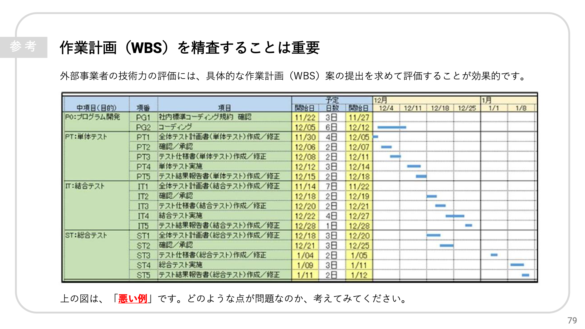
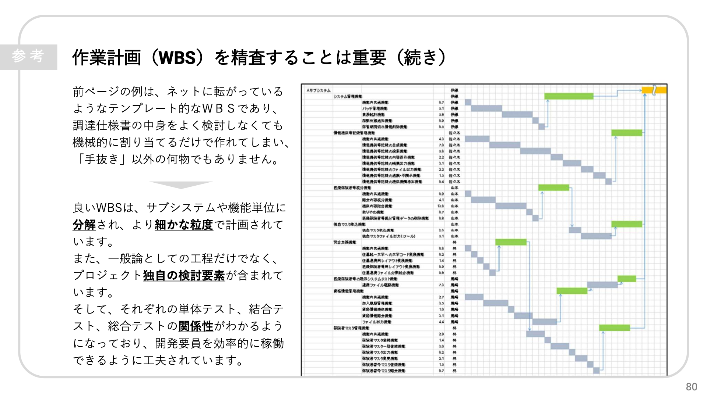
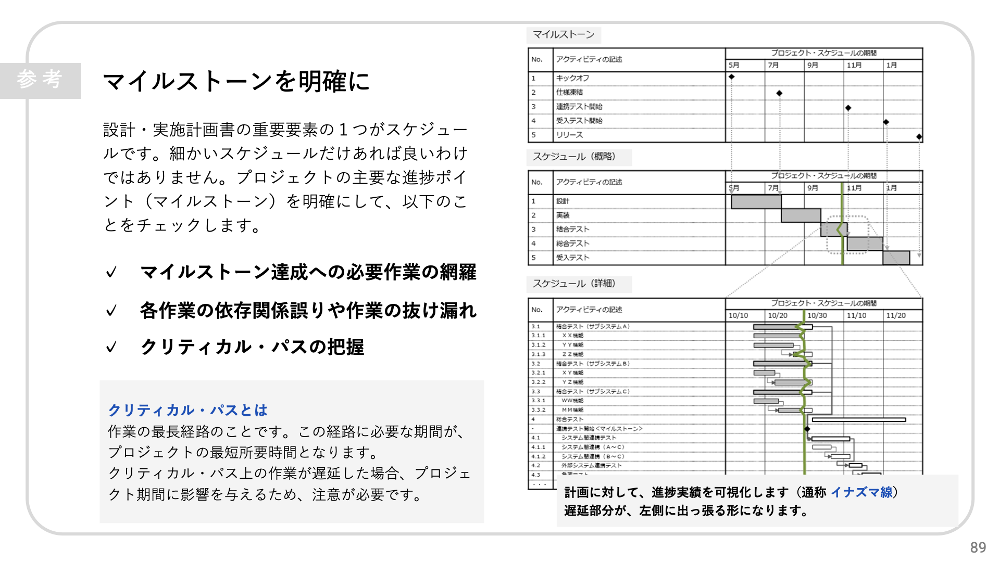

デジタル庁の研修資料に見るWBSの要点
1. はじめに
デジタル庁では、政府情報システムの整備および管理に関する共通ルールとして「デジタル社会推進標準ガイドライン群」を公開しています。本編や実践ガイドブックなど膨大な文書群で構成されていますが、その要点を現場の職員向けにスライド形式で分かりやすく解説した公式教材が『（参考）標準ガイドライン研修資料』です。
本記事では、この研修資料で示されている作業計画（WBS）のポイントについて、実際のガントチャート図を交えて要約してご紹介します。
2. 作業計画（WBS）の重要性と「悪い例」
研修資料では、外部事業者の技術力を評価するにあたり、具体的な作業計画（WBS）案の提出を求めて評価することが効果的であると説明されています。その上で、精査すべき対象として「悪い例」のガントチャートが提示されています。

資料によると、この例が問題とされる理由は以下の通りです。
- インターネット等で入手できるテンプレート的なWBSであり、調達仕様書の内容を検討することなく機械的に日付を割り当てただけで作成されていること。
- 個々のプロジェクト固有の検討要素や業務内容が反映されておらず、実質的な作業の裏付けに欠けていること。
3. 良いWBSの条件
続いて資料では、前述の「悪い例」と対比する形で、「良いWBS」に求められる要件と具体例が示されています。

資料に記載されている「良いWBS」の要点は以下の通り要約されます。
- 適切な粒度への分解: 単に大まかな工程を並べるのではなく、サブシステムや機能単位に分解され、より細かな粒度で計画されていること。
- 固有の検討要素の反映: 一般論としての開発工程だけでなく、プロジェクト独自の検討要素が含まれていること。
- 依存関係の可視化: それぞれの単体テスト、結合テスト、総合テストの関係性がわかるようになっており、工程間のつながりが明確であること。
- 要員の効率的稼働（平準化）: 開発要員を効率的に稼働させられるよう工夫されていること。
4. マイルストーンとクリティカル・パスの管理
また、設計・実施計画書の重要要素であるスケジュール管理において、細かい作業だけでなく「主要な進捗ポイント（マイルストーン）」を明確にすることの重要性が解説されています。

本スライドで示されている要点は以下の通りです。
- マイルストーンを設定した上で、「マイルストーン達成に必要な作業の網羅」「各作業の依存関係の誤りや作業の抜け漏れ」「クリティカル・パスの把握」をチェックすること。
- クリティカル・パス（作業の最長経路）上の作業が遅延した場合、プロジェクト全体の期間に直接影響を与えるため、重点的な管理が必要であること。
- 計画に対する進捗実績を把握する手段として「イナズマ線」を用い、遅延している作業（左側に出っ張る部分）を視覚的に把握すること。
5. 所感
今回、デジタル庁が公表している研修資料を拝見し、公的機関の大規模プロジェクトにおいて求められているWBSの要点が、私自身がこれまで実践し発信してきた考え方に非常に近いのだと実感しました。
当ブログの過去の記事（『WBSの勘所』や『ガントチャートの決め手は平準化』）でも触れてきた通り、実効性のある計画を立てるためには、作業を具体的かつ適切な粒度まで分解し、作業間の論理的な依存関係を定義した上で、要員の負荷が偏らないよう平準化を行うことが欠かせません。
国家規模の大規模な情報システムであっても、民間のシステム開発や個人のプロジェクトであっても、スケジュールを形骸化させずに現実的な未来を予測するためのWBSの勘所は共通しているのだと改めて感じました。
最後までお読みいただきありがとうございました。